01
Educación
Apoyamos el acceso a la educación y el fortalecimiento de las instituciones educativas de la región.
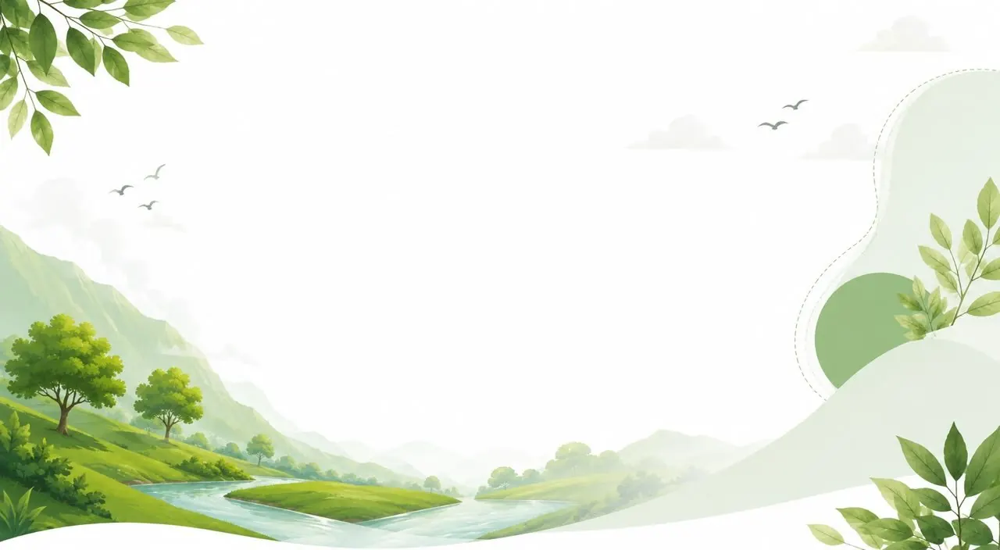
Somos PBCM, un programa de inversión social y ambiental que acompaña a las comunidades y cuida la naturaleza, con cariño y compromiso, en las zonas que más lo necesitan.
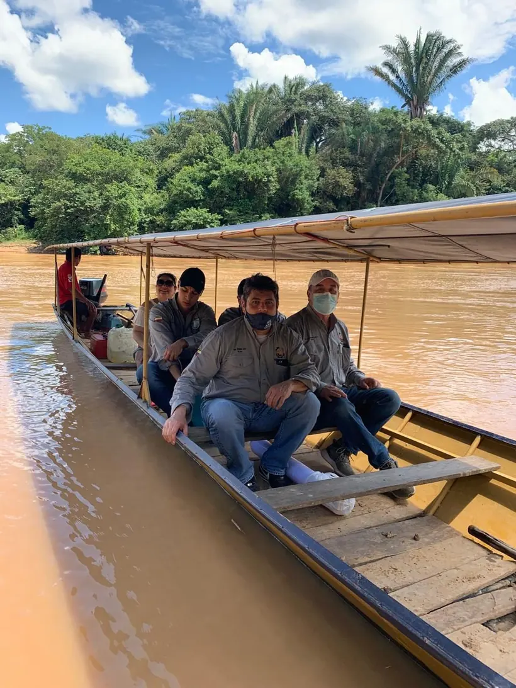
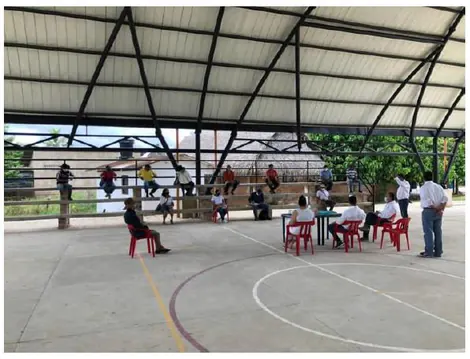
En muchas zonas rurales de Colombia persisten profundas brechas sociales. PBCM nace para cerrarlas con una inversión social que fortalece a las comunidades y cuida su entorno natural.
Cada proyecto se concerta con la propia comunidad, generando empleo local y bienestar que perdura. Porque el desarrollo de las personas y la salud del planeta van de la mano.
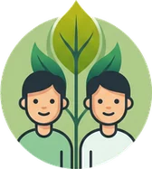
Mejoramos la calidad de vida de las poblaciones en las áreas de influencia, con proyectos concertados y transparentes.
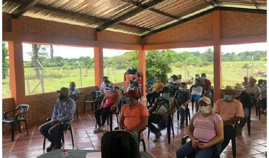
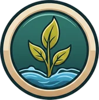
Protegemos los recursos naturales —reforestación y conservación de los nacimientos de ríos— para un desarrollo sostenible.
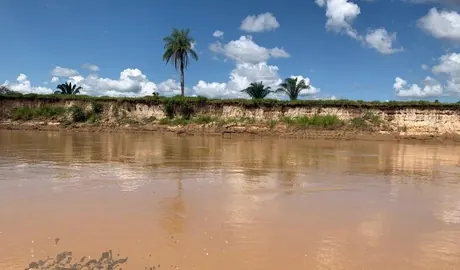
Invertimos donde más se necesita, con proyectos que dejan huella en las comunidades y en el medio ambiente.
Apoyamos el acceso a la educación y el fortalecimiento de las instituciones educativas de la región.
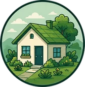
02Mejoramos y mantenemos las viviendas de las familias, por hogares más dignos y seguros.
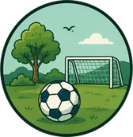
03Promovemos el deporte y la recreación como motor de unión y bienestar comunitario.
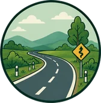
04Apoyamos el mejoramiento y mantenimiento de las vías terciarias que conectan al campo.
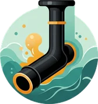
05Llevamos agua, energía y alcantarillado a las comunidades más apartadas del país.
Reforestamos y conservamos los nacimientos de los ríos para proteger el agua y la vida.
La operación responsable y el cuidado del medio ambiente se complementan. En PBCM el componente ambiental es parte esencial de cada proyecto.
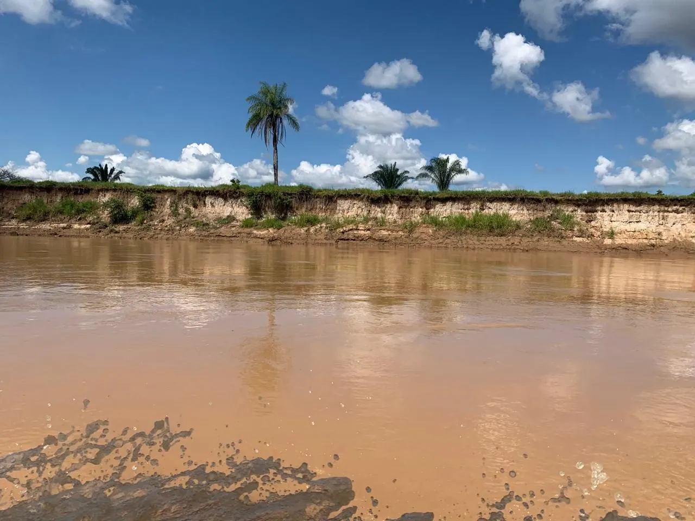
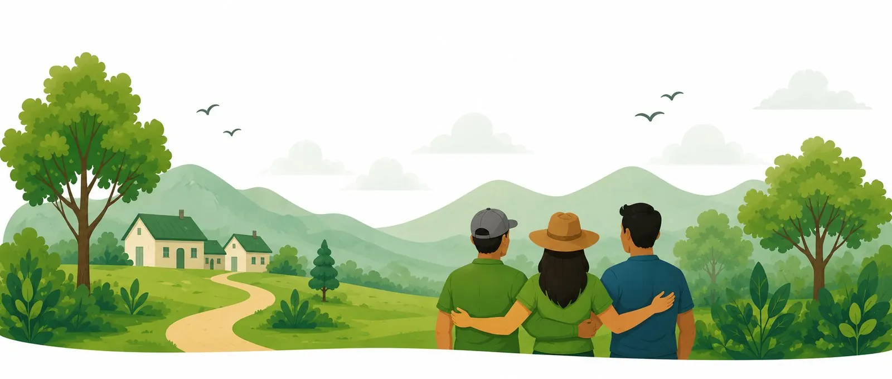
Nuestro trabajo se construye escuchando a las personas y llegando a acuerdos para el beneficio de todos.
Damos a conocer a la población los trabajos a realizar y el personal requerido para cada actividad.
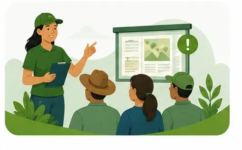
Escuchamos a la comunidad y llegamos a consensos sobre los proyectos de inversión social.
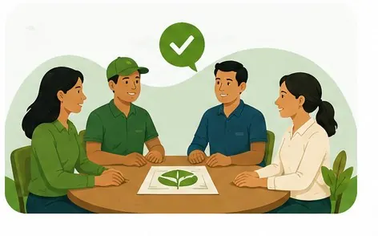
Desarrollamos los proyectos generando empleo local y bienestar duradero.
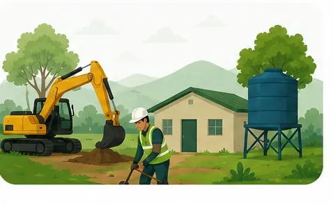
Momentos del trabajo cercano con las comunidades de las zonas de influencia.
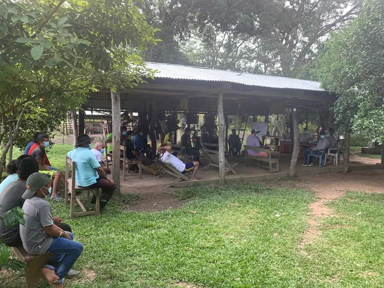
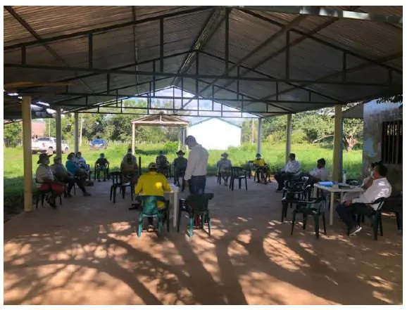
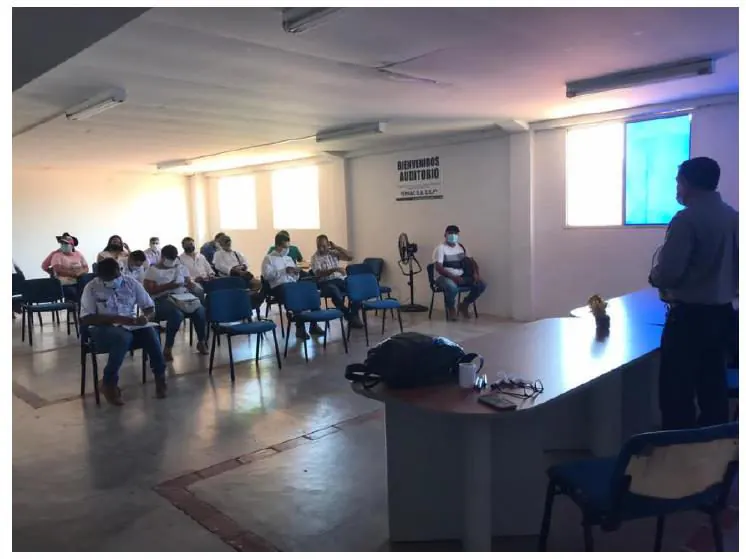
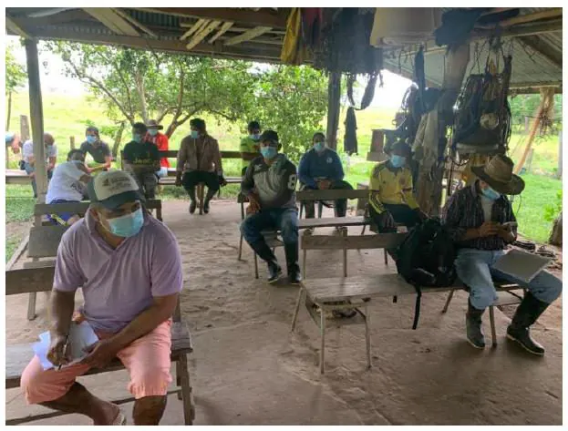
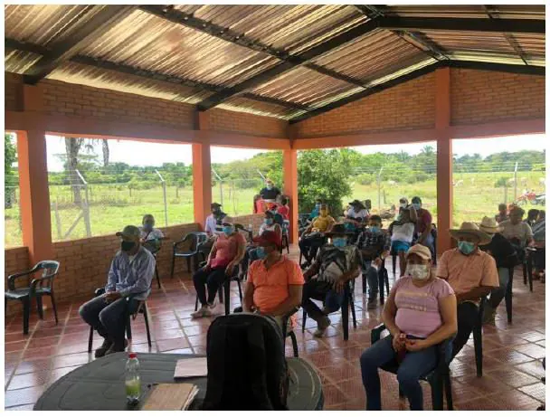
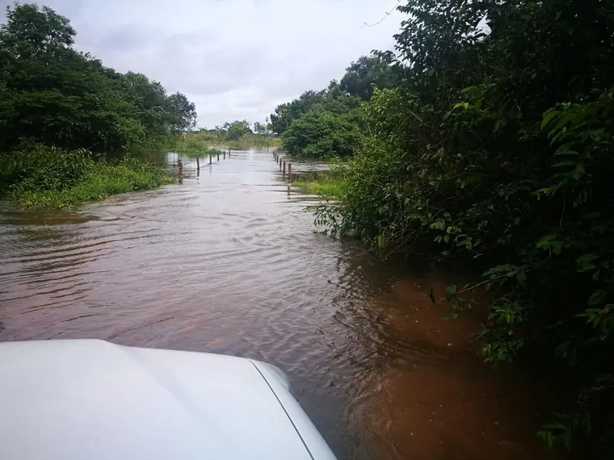
¿Quieres conocer el programa, proponer un proyecto o vincularte como aliado? Escríbenos y construyamos juntos comunidades más fuertes y un entorno más sano.
ContáctanosEstamos para escucharte. Escríbenos y con gusto te contamos más sobre el programa.